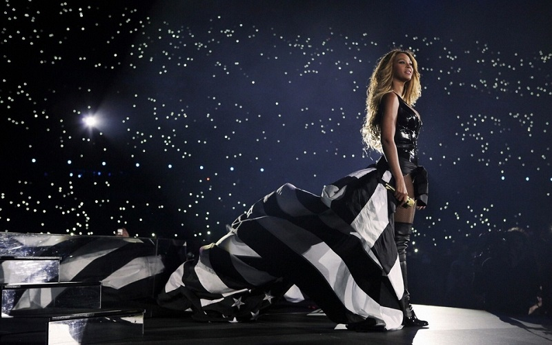

03' Bonnie & Clyde - Radio Edit
专辑：《'03 Bonnie & Clyde》
歌手：Jay-Z / Beyonce' Knowles
Uhh uhh uhh
You ready B? Let's go get 'em...
Look for me
Young B
Cruisin' down the westside highway
Doin' what we like to do our way
Eyes behind shades, this necklace the reason
All of my dates been blind dates
But today, I got my thoroughest girl wit me
I'm mashin' the gas, she's grabbin' the wheel, it's trippy
How hard she rides wit me - the new Bobby and Whitney
Only time we don't speak is durin' "Sex and the City"
She gets Carrie feva, but soon as the show's ova
She's right back to being my soldier
Cuz mami's a rida, and I'm a rolla
Put us togetha, how they gon' stop both us?
Whateva she lacks, I'm right over her shoulder
When I'm off track mami is keepin' me focused
So let's lock this down like it's supposed to be
The '03 Bonnie and Clyde, Hov' and B, holla
Jay-Z: All I need in this life of sin is me and my girlfriend （me and my Girlfriend）
Beyonce: Down to ride 'til the very end, it's me and my boyfriend （me and My boyfriend）
Jay-Z: All I need in this life of sin is me and my girlfriend （me and my Girlfriend）
Beyonce: Down to ride 'til the very end, it's me and my boyfriend （me and My boyfriend）
The problem is, you dudes treat the one that you lovin'
Wit the same respect that you treat the one that you humpin'
That ain't 'bout nuttin' - if eva you mad about sunntin'
It won't be that; oh no it won't be that
I don't be at, places where we comfy at
With no be-atch; oh no you won't see that
And no, I ain't perfect - nobody walkin' this earth's surface is
But girlfriend, work wit the kid
I keep you workin' that Hermes Birkin bag
Manolo Blahnik Timbs, aviator lens
600 drops, Mercedes Benz
The only time you wear Burberry to swim
And I don't have to worry, only worry is him
She do anything necessary for him
And I do anything necessary for Her
So don't let the necessary occur, yep!